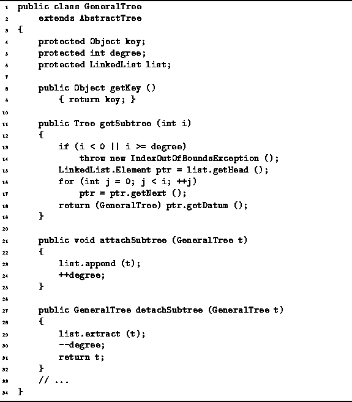
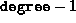
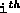
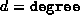

Data Structures and Algorithms
with Object-Oriented Design Patterns in Java
Data Structures and Algorithms
with Object-Oriented Design Patterns in Java
Program  defines the various GeneralTree class
methods for manipulating general trees.
The getKey method is a field accessor
that simply returns the object contained by the root node of the tree.
Clearly, its running time is O(1).
defines the various GeneralTree class
methods for manipulating general trees.
The getKey method is a field accessor
that simply returns the object contained by the root node of the tree.
Clearly, its running time is O(1).

Program: GeneralTree class getKey, getSubtree, attachSubtreeand detachSubtree methods.
The getSubtree method takes as its argument an int, i, which must be between 0 and , where degree is the degree of the root node of the tree. It returns the  subtree of the given tree. The getSubtree method simply takes i steps down the linked list and returns the appropriate subtree. Assuming that i is valid, the worst case running time for getSubtree is O(d), where  is the degree of the root node of the tree.
 Copyright © 1998 by Bruno R. Preiss, P.Eng. All rights reserved.
Copyright © 1998 by Bruno R. Preiss, P.Eng. All rights reserved.